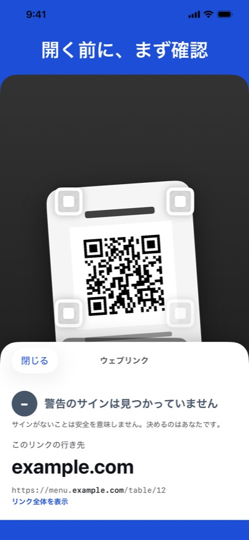
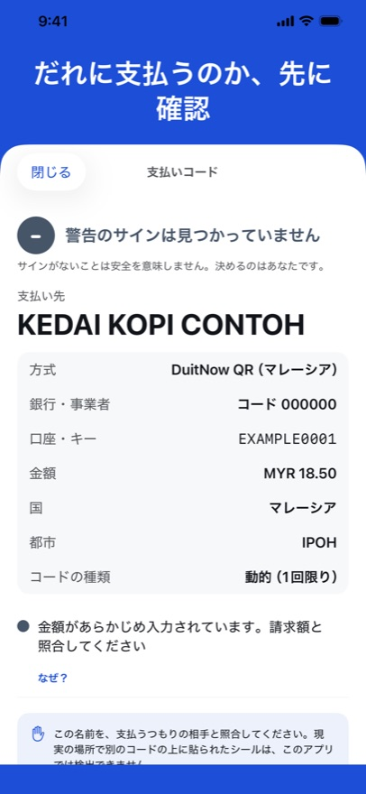
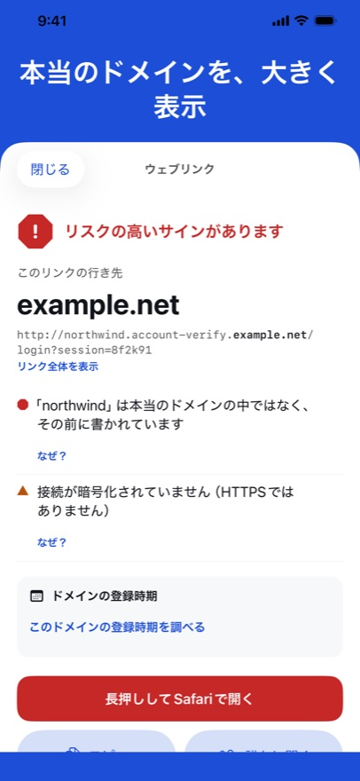

QR Trust Scanner は、タップする前にQRコードやリンクの行き先を示します。本当のドメインを大きく表示し、もう一度見るべき点を挙げ、支払いコードならお金の受取人も示します。自動で何かを開くことはなく、すべてiPhoneの中で確認します。



本当のドメインを大きく
リンクは、他人のアドレスの前に見慣れた言葉を置けます。アプリはまず本当のドメインを示します。
だれに支払うのか
ベトナム、ブラジル、インドネシア、マレーシアで使われる EMVCo 規格の支払い用QRコードについて、受取人、金額、コードのチェック値が正しいかを示します。
結論ではなく、サイン
サインはどれも短い一文で、「なぜ？」で理由を読めます。3つのレベル。決めるのはあなたです。
App Store で近日公開
利用しているオープンデータ
- 警告リスト：PhishDestroy「destroylist」（github.com/phishdestroy/destroylist）、MIT ライセンス、© 2019 PhishDestroy。
- Public Suffix List（publicsuffix.org）、Mozilla Public License 2.0。
- IANA：ルートゾーンのドメイン末尾一覧と RDAP ブートストラップレジストリ。